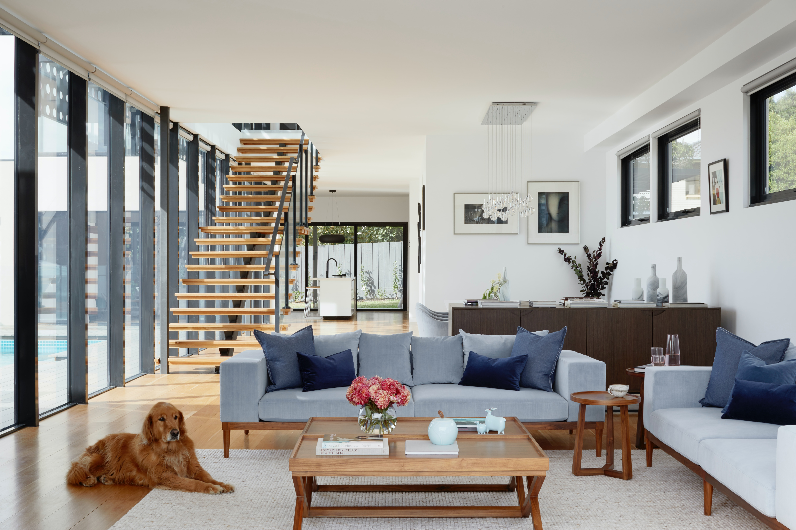
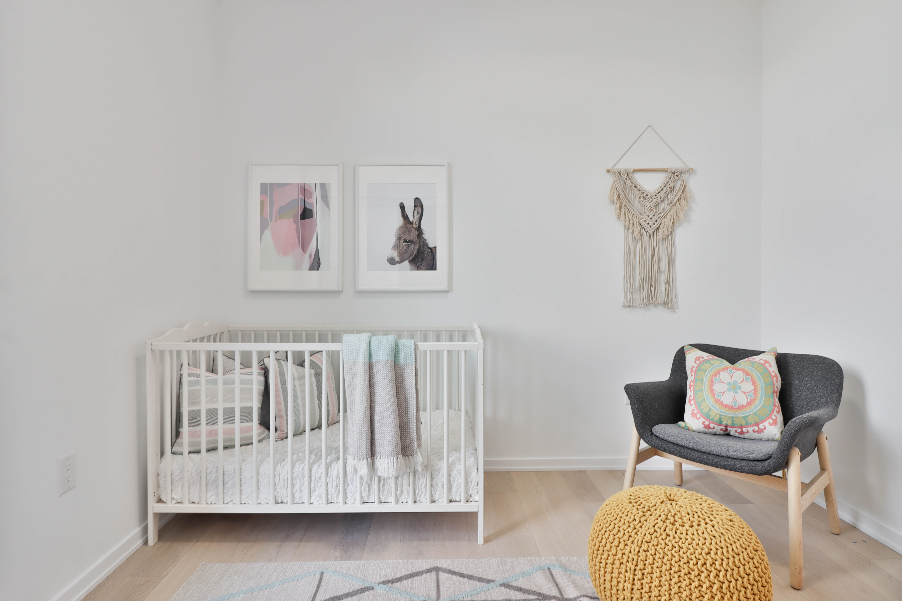

<section class="container">
    <div class="section article">
        <main class="article-main">
            <ul class="breadcrumb">
                <li><a href="article-list.html">裝修學堂</a></li>
                <li><span>|</span></li>
                <li> <a href="article-detail.html">關於裝修，三個你必須擁有的觀念</a></li>
    
            </ul>
            <h2 class="article-title">關於裝修，三個你必須擁有的觀念<span class="material-symbols-rounded">
                    build
                </span></h2>
            
            <p>都說買房是大事，但室內裝修也不能馬虎呢！畢竟是自己要住的空間，大家一定都希望能裝修的舒適宜居吧，不過裝修之前有些重要觀念，是小編今天特地請教總監大人，請他不吝嗇跟我們分享的！從設計師的角度觀察與累積下來的實務經驗，希望提供給各位有裝修需求的屋主，讓大家少走一點彎路，少花一些冤枉錢，你還不學起來嗎?</p>
            <h3>了解自己的生活需求</h3>
            <p>根據總監多年的觀察，對自己的生活習慣、日常動線越熟悉的屋主，越能清楚告訴設計師自己的需求是什麼，討論時能更快達成共識，交屋後的滿意度也相當不錯。</p>
            <p>舉例來說，如果是頂客家庭，且屋主本身喜歡下廚，對於廚房的使用頻率較高，勢必會擔心油煙問題，設計上就不建議用開放式廚房，而是會盡可能幫屋主規劃收納廚具和各式調味料的櫃體，也會確認屋主有多少預算可以投資在廚房，預計要帶入新家的大小家電有哪些，是否要預留空間等等...</p>
            
            <p>光是廚房就有這麼多需要討論的需求，更別說是主臥、客廳等空間啦，這樣你們知道「了解自己的需求」在空間設計上是多麼重要了吧！</p>
            <p>另外屋主需要考慮的，可不只是當前的生活狀態而已，更要把未來五到十年的生活規劃一同納入考量，像是結婚、是否與另一半父母同住，親友會不會經常到家裡留宿，未來預計生小孩還是養寵物就好，是否需要額外的客房、書房、小孩房、儲藏室等等，都會是不可忽略的細節。</p>
            <p>如果只考慮當前的狀態，很可能在完工沒多久，就發現生活型態的轉變，導致當初的設計不符合需求，需要重新規劃，那之前的時間金錢不就付諸東流了嗎，可別讓這種後悔莫及的事件發生啊！</p>
            <h3>不一定要一步到位</h3>
            <p>連買房都已經勒緊褲腰的生活了，如果想裝修的美輪美奐又是一場硬仗，相信不少屋主都認為裝修是件耗時費力的大工程，既然要裝修就乾脆一步到位對吧，但根據總監的經驗來說，這樣的觀念其實不適用於所有人哦！</p>
            
            <p>首先預算就是一大考量，需求永遠無限，但預算就這麼一點，屋主務必要確認目前現有預算，以及最主要的生活空間，寧可犧牲一些次要空間，也要盡可能把主要區域裝潢到滿意，只要想像一下就知道，如果一個空間看起來漂漂亮亮，但是床頭少一個插座，客廳沒有收納空間，居住起來相當不便利的話，整體的美觀又有什麼用呢?</p>
            <p>預算不足的情況下，預留一些彈性空間是總監最推薦的選擇，像是前面提過的，未來不確定是否會有新的家庭成員誕生，這時候可以保留一間空房，只需完成基本的地板、油漆上色即可，家具軟裝可以先暫緩或未來再依序補齊，完全不需要免強加裝系統櫃、床版等，讓空間一次到位，且先當作臨時書房或客房來使用，未來真的有新成員入住，也能夠更快速又有彈性的進行改變調整，這不是一箭雙雕嗎 !</p>
            <h3>一定要做功課</h3>
            <p>千萬不要以為把你天馬行空的需求通通倒給設計師就結束了，屋主最好還是要自己做功課，了解房屋本身的優勢和限制、知道一些基本的材質選用等等，最重要的是挑選一個你信任的設計師！</p>
            
            <p>提前做功課的用意和了解自己的生活需求是一樣的，不但可以大幅節省和設計師溝通時的障礙，也可以更精準提出偏好和需求，畢竟在材質和顏色的挑選上，還是會依據每個人的喜好不同而有所差異，但畢竟屋主都不是行內人士，找一個專業且能信賴的設計師，也就相對重要了，如果真的不了解裝修概念，至少也要看一看設計師過去的作品案例、稍微注意一下彼此溝通時的契合程度，這點絕對是屋主要做的功課之一唷。</p>
            <p>屋主可以不厭其煩地跟設計師溝通，相信優質的設計師也會這麼做的！反覆溝通指的是，確認彼此是否真正了解對方的藍圖規畫、設計訴求等等，絕對不是第一天告訴設計師你想裝系統櫃，第二天想改變油漆顏色哦😨，裝修可不是扮家家酒，設計費和裝修費售出無法退貨啦!</p>
            <p>有提早做功課的屋主，在交屋滿意度上可說是最高的呢，畢竟他了解自己的需求，且能完善表達，對設計師也足夠信任，良好的溝通對室內裝修而言是必不可少的過程，另外，目標明確的屋主在裝修期間不但可以省去來來回回的糾結與反覆修改，也不需要設計師在每個細節一一解釋，更能加速工程的進度執行，這點可說是相當重要，省時省錢還是得靠屋主自己呀！
            </p>
            
            <p>以上三個觀念講解完畢，小編最後來幫大家總複習，室內裝修首先是屋主必須了解自己的生活需求，以及未來的居家規劃，確認預算和預留彈性空間，接下來需要找到一個設計理念符合、值得信賴的設計師，總監的不私藏分享，妳們都學起來了嗎，希望大各位屋主都能擁有舒適的生活空間，也歡迎讓Sollys來幫你實現夢想，把丹麥的陽光帶進你家唷，我們下次見！</p>
            <div>
                <a href="article-list.html" class="main-btn">其他文章<i class="bi bi-chevron-right"></i></a>
            </div>
        </main>
        <aside class="article-aside">
           <h3 class="h2"><span>相關文章</span></h3>
           <a href="#" class="aside-img-1">租屋族福利！居家軟裝挑選術，跟著達人不會錯</a>
           <a href="#" class="aside-img-2">你知道廚房的動線會影響生活嗎？</a>
        </aside>
    </div>
</section>